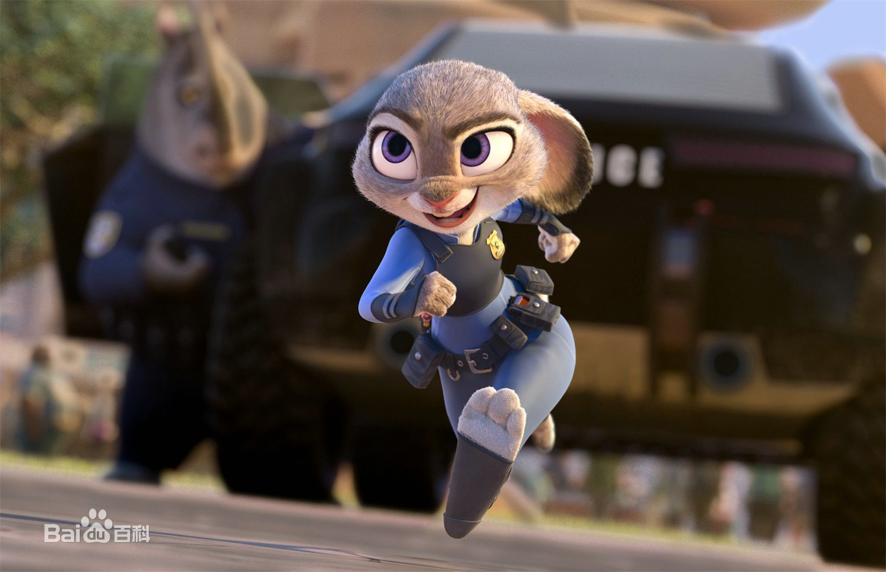

疯狂动物城
动画、动作、冒险
美国 109分钟 2016年3月4日（中国大陆）
一个现代化的动物都市，每种动物在这里都有自己的居所，有沙漠气候的撒哈拉广场、常年严寒的冰川镇等等，它就像一座大熔炉，动物们在这里和平共处——无论是大象还是小老鼠，只要努力， 都能闯出一番名堂。兔子朱迪从小就梦想能成为动物城市的警察，尽管身边的所有人都觉得兔子不可能当上警察，但她还是通过自己的努力，跻身到了全是大块头动物城警察局，成为了第一个兔子警官。 为了证明自己，她决心侦破一桩神秘案件。追寻真相的路上，朱迪迫使在动物城里以坑蒙拐骗为生的狐狸尼克帮助自己，却发现这桩案件背后隐藏着一个意欲颠覆动物城的巨大阴谋， 而朱迪和尼克也在历尽艰险的查案过程中成为了好搭档。
一个现代化的动物都市，每种动物在这里都有自己的居所，有沙漠气候的撒哈拉广场、常年严寒的冰川镇等等，它就像一座大熔炉，动物们在这里和平共处——无论是大象还是小老鼠，只要努力， 都能闯出一番名堂。兔子朱迪从小就梦想能成为动物城市的警察，尽管身边的所有人都觉得兔子不可能当上警察，但她还是通过自己的努力，跻身到了全是大块头动物城警察局， 成为了第一个兔子警官。 为了证明自己，她决心侦破一桩神秘案件。追寻真相的路上，朱迪迫使在动物城里以坑蒙拐骗为生的狐狸尼克帮助自己，却发现这桩案件背后隐藏着一个意欲颠覆动物城的巨大阴谋， 而朱迪和尼克也在历尽艰险的查案过程中成为了好搭档。
一个现代化的动物都市，每种动物在这里都有自己的居所，有沙漠气候的撒哈拉广场、常年严寒的冰川镇等等，它就像一座大熔炉，动物们在这里和平共处——无论是大象还是小老鼠，只要努力， 都能闯出一番名堂。兔子朱迪从小就梦想能成为动物城市的警察，尽管身边的所有人都觉得兔子不可能当上警察，但她还是通过自己的努力，跻身到了全是大块头动物城警察局， 成为了第一个兔子警官。 为了证明自己，她决心侦破一桩神秘案件。追寻真相的路上，朱迪迫使在动物城里以坑蒙拐骗为生的狐狸尼克帮助自己，却发现这桩案件背后隐藏着一个意欲颠覆动物城的巨大阴谋， 而朱迪和尼克也在历尽艰险的查案过程中成为了好搭档。